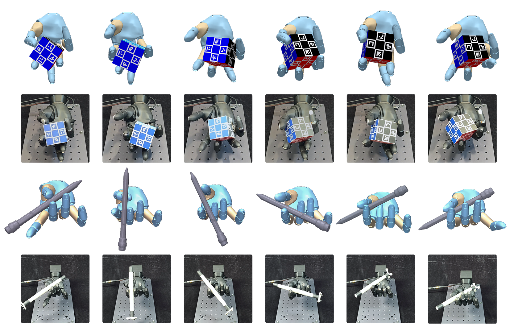

TopoRetarget is a tuning-free, interaction-preserving retargeting method that converts
human hand-object demonstrations into robot references for contact-rich dexterous manipulation.
The generated references enable efficient RL policy learning and zero-shot sim-to-real transfer
on the Wuji Hand.
Abstract
Human hand-object demonstrations provide dense reference motions for training dexterous
manipulation RL policies through reference tracking. However, to use such demonstrations for
robot policy learning, retargeting must preserve more than hand pose and maintain the
object-relative interaction structure that defines task execution. Otherwise, contact and
feasibility artifacts can propagate into downstream RL training.
We introduce TopoRetarget, a tuning-free, interaction-centric retargeting framework that
preserves task-relevant local hand-object topology while adapting human demonstrations to
dexterous robot hands. The method constructs a sparse interaction graph over hand and object
keypoints and optimizes distance-weighted Laplacian deformation with directional consistency,
kinematic constraints, and penetration handling.
Evaluations show that the generated references improve both interaction fidelity and policy
learning: TopoRetarget achieves 9.33 mm contact precision error and
16.30° contact alignment error on the ContactPose dataset, improves Pen-Twirl training
success by +40.6 percentage points over existing baselines, and enables zero-shot
transfer to Wuji Hand hardware on cube reorientation and pen spinning.
Contributions
An interaction-centric retargeting framework that preserves local hand-object topology while
enforcing dexterous hand kinematic and penetration constraints.
A lightweight reference-based RL tracking pipeline that enables zero-shot sim-to-real
transfer for contact-rich dexterous skills, including pen spinning and cube reorientation.
A dexterous hand-object interaction dataset of retargeted trajectories, task references,
and trained policies for reproducible reference-based dexterous manipulation.
Method
Starting from a human hand-object trajectory, a relative bone-direction warm-up initializes
the robot hand pose. A sparse interaction graph over hand links and object keypoints then drives
a distance-weighted Laplacian optimization under directional, kinematic, and non-penetration
constraints, producing references that preserve local interaction topology.
Comparison with Baselines
Compared with hand-centric and contact-aware baselines (DexPilot, GeoRT, OmniRetarget, and
others), TopoRetarget avoids missed contacts, hand-object penetration, and joint
hyperextension caused by uniform-weight Laplacian deformation on a global scale.
Real-world Results Hover to zoom

Zero-shot sim-to-real rollouts on the Wuji Hand for cube reorientation and pen spinning,
using policies trained purely with TopoRetarget references under a lightweight RL setup.
Generalization Hover to zoom
Tuning-free generalization across dexterous hand embodiments (MANO, Wuji, Leap) and across
object meshes and scales, from a single human demonstration.
BibTeX
@inproceedings{toporetarget2026,
title = {TopoRetarget: Interaction-centric Retargeting for Dexterous Manipulation},
author = {Anonymous},
booktitle = {Conference on Robot Learning (CoRL)},
year = {2026}
}